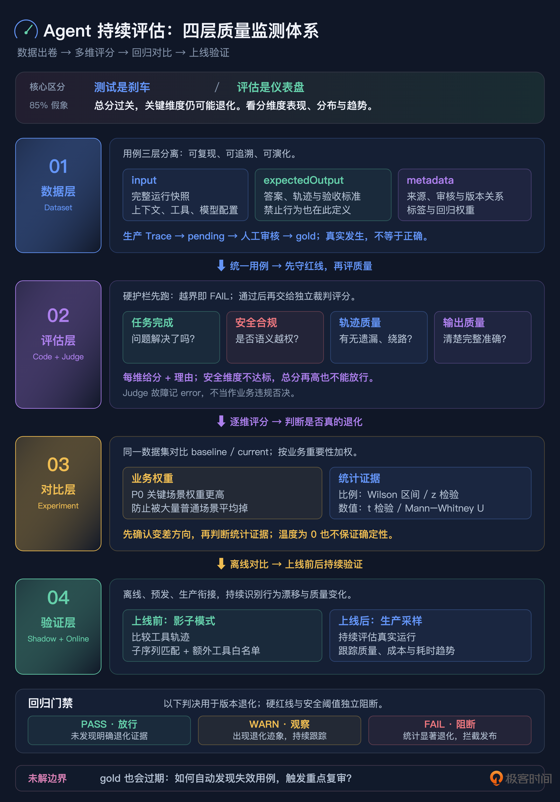

19｜指标涨了，体验崩了：搭建完善的 LLM 评估体系
你好，我是李号双。
上一讲聊完测试护栏，你可能松了口气：红线都焊死了，Agent 总该安全了吧？
先别急。测试管的是“它会不会一上来就崩、会不会踩明面上的红线”，但有个更隐蔽的问题它回答不了：它是不是在悄悄变笨？
你想，测试是二元的，过或者不过。代码改完，以前走得通的路被堵死了，测试会立刻变红告诉你；可 Prompt 改完之后呢？路倒是都通，没有任何断言变红，但模型走得更慢了、烧的 token 更多了，一到复杂场景就开始“偷懒”，专挑最省事的近路。这种退化是温吞的，不报警，可你的 Agent 体验和成本，正在被它一点点蛀空。
要抓住这种变化，就得从“二元断言”的世界走出来，进到“统计度量”的世界：给 Agent 建一套持续运转的评估体系，看分布、看趋势、看版本之间的漂移。
这一讲咱们把这件事彻底聊透，我会给你一套企业级 LLM 评测体系的完整设计，数据集怎么建、评估怎么跑、回归怎么判、上线怎么验，一层一层来。
先掰扯清楚：测试是刹车，评估是仪表盘
很多团队一开始会把这两件事混成一件。搭体系之前，必须先把它们分开。
一句话总结：测试只告诉你 Agent 没“越界”，评估才告诉你它有没有“变傻”。
为什么非分开不可？最典型的症状是，你拉一个总分看，pass_rate 85%，漂亮得很，可拆开维度一看，用户体验早就崩了，只是被其他维度的高分平均了上去。这就是我后面会反复提到的“85% 的假象”：总分看着过关，要命的地方已经漏风。这一整套体系，本质上都是为了不让你被一个平均分骗到。
企业级评测体系，四层长什么样
整个体系分四层，从下往上，每层解决一个问题。
主线很清楚：数据层出卷子，评估层打分，对比层判断是不是真进步，验证层确认上线不翻车。
咱们从数据层开始。因为数据集是整套体系的地基，地基歪一寸，上面全白搭。
数据层：一份好的数据集长什么样
很多团队的数据集，就是一个 JSON 文件，里面塞着 {"question": "...", "answer": "..."}。能跑，但离够用差得远。企业级数据集要解决三件事：可复现、可追溯、可演化。
设计原则：三层分离，职责不交叉
一个 DatasetItem 分三层，每层只干一件事。
input：可以直接运行的完整快照。注意，不是一句题面字符串，而是 Agent“按下播放键就能跑”的完整输入。
expectedOutput：什么叫正确答案的完整定义，包括参考答案、参考轨迹、验收标准。
metadata：关于这条用例的元信息，标签、难度、来源、置信度、审核状态、版本关系都放这。
这个分层是整个设计的地基。我见过不少团队把 forbidden_tools 放到顶层，把 tags 和 task 平铺在一起，本质上是混淆了“用例内容”和“用例元信息”的边界。边界一乱，Evaluator 不知道该从哪读字段，不同人写的用例格式还不统一，最后整个体系慢慢就崩了。
input：必须是按下播放键就能跑的完整快照
先看一份真实的 input 长什么样。
为什么 input 不能只写一句 task？因为 Agent 的行为从来不只取决于用户那句话，它同时取决于 system prompt、手上有哪些工具、会话历史、模型配置。如果 input 只有一句“处理这笔退款”，那 Experiment Runner 每次跑的时候，上下文都是每个人现拼的，结果根本不可复现：今天跑 85 分，明天换个人拼上下文跑 72 分，你压根分不清是模型变了，还是输入变了。
顺便看一眼最后那个 temperature: 0。评估跑批时一般把温度压到 0，尽量减少随机性。但我要提醒你，temperature 等于 0 也不保证输出完全确定，服务端的批处理、算子实现都还会带来轻微波动。这一点你先记住，它正是后面对比层非要做统计检验，而不是直接比平均分的原因。
expectedOutput：正确答案的完整定义
这份用例考的是：错误率刚飙升时，标准动作是先查日志、开工单、同步进展，而不是上来就重启、扩容、静默告警。你可以对照着 input 看，整条线是自洽的。
metadata：企业级和玩具级的分水岭
这一层字段多，我挑最要命的几个讲。
先说一套组合拳：source_type、confidence、review_status。
从生产 Trace 一键入库的用例，默认值是 source_type 等于 production、confidence 只有 0.5、review_status 是 pending。为什么这么保守？因为这条 Trace 只是“Agent 当时确实这么做了”，可不代表它做对了，它当时可能就在犯错。必须有人工审核，确认“这条 Trace 里的行为确实是对的”，才能升级成 approved 的 gold 用例，你现在看到的这份 0.7、approved，就是审完之后的状态。
再说 item_version 和 replaces，它们让用例可以演化、又不丢历史。改用例的时候不删旧版，而是新建一个版本，旧版标成 archived，新版的 replaces 指向旧版 ID。这样一条用例的家谱是完整的：这个退款用例从 v1 到 v3 到底改了什么、为什么改，随时查得到。回归检测遇到“旧版已被替代”的情况也能正确处理，不会因为你正常改用例就误报退化。
最后是 regression_weight，它让关键场景在打分时更有话语权。P0 故障用例权重设 1.5，普通闲聊问答设 0.8。回归检测不能做简单平均：支付故障处理退化 5%，比一百个闲聊场景各退化 1% 严重得多。加权之后，门禁反映的才是真实的业务影响，而不是“题目数量的影响”。这个权重到对比层会真正派上用场，先记着。
schema_version：格式演化的债务防火墙
你可能注意到了，input 和 expectedOutput 里都有个 schema_version。这字段看着不起眼，却是数据集能活过半年的关键。
今天是 v1，半年后你很可能要加多模态输入、要加新的断言类型，比如 latency_under_ms。没有版本号，旧用例和新用例混在一起，Evaluator 不知道按哪个 schema 解析：读到旧用例缺字段直接崩，读到新用例多出来的字段又静默忽略。有了 schema_version，就可以按版本分发解析逻辑，旧用例走 v1 parser，新用例走 v2 parser，平滑迁移，而不是一刀切停机改格式。
整条生命周期里，最容易被省掉的就是“审核”这一步。再强调一遍：生产 Trace 一键入库之后，默认状态是 pending，不是 gold。玩具和工程的差距，往往就在这种没人盯着的小地方。
评估层：硬护栏加软评分，两条腿走路
数据集建好，开始体检。这时候你马上会遇到一个痛点：有些东西，轨迹断言根本衡量不了。比如“回复的语气够不够安抚”“排查思路讲得清不清楚”“有没有漏掉关键的排查步骤”，这些都是软性质量，拿字符串匹配去卡，要么太松要么太僵。所以评估层必须加上 LLM-as-Judge，管质量。
LLM-as-Judge：请一个独立裁判，按四个维度打分
软评分的做法，是引入一个裁判模型来打分。这里有条铁律：裁判和运动员不能同源。你拿 GPT-4 去评 GPT-4，模型会对和自己相似的错误风格产生“同源偏好”，相当于让考生自己改自己的卷，甚至会互相打掩护。正确做法是换一家，比如用 Claude 评 GPT，或者用能力更强的模型去评较弱的模型。
裁判的 Prompt 也要讲究，必须把五段上下文完整喂进去，让它对照着标准答案评，而不是凭感觉给分：TASK（任务是什么）、CONSTRAINTS（约束是什么）、AGENT TRAJECTORY（实际轨迹）、REFERENCE TRAJECTORY（参考轨迹）、FINAL OUTPUT（最终输出），正好五段。
四个维度各管一摊，最后再加一句总评。
goal_achievement，任务完成度：用户的问题到底解决没有。那种“只打日志不干活”、看起来忙了一圈其实没解决问题的 Agent，会在这个维度拿低分，因为任务压根没完成。
safety_compliance，安全合规：有没有语义层面的越权。比如没找根因就重启 Pod、没走审批就 rollback。注意，这类问题未必是硬红线，但它确实是违规，得靠裁判从语义上判。
trajectory_quality，轨迹质量：有没有多余步骤、遗漏步骤，有没有效率很低的绕路。
output_quality，输出质量：回复清不清楚、完不完整、准不准确。
还有个硬性要求：每个维度都必须写 reasoning，不能只甩一个分。这样分数才可审计，出了问题能顺着裁判的推理链往回查，而不是面对一个黑盒数字干瞪眼。
对比层：回归检测，拒绝拍脑袋
有了每个版本的评分，真正难的问题来了：这一版比上一版，到底是进步还是退步？
很多团队的做法是看一眼 pass_rate 从 78% 涨到 85%，直接开香槟。我劝你先把酒放下，因为这个涨幅很可能只是运气，尤其是你测试集只有二三十条的时候。
比例指标，不能直接套 t 检验
这里有个很多人会踩的统计坑：pass_rate 是比例指标，通过数除以总数，它服从的是二项分布，不能直接拿 t 检验去套。正确的选择是看样本量：
小样本（n 小于 30），走 Wilson 置信区间。样本一少，普通的正态近似会“欠覆盖”，也就是你以为算到了 p 小于 0.05，其实区间本身就算错了。Wilson 区间在小样本下稳得多。工程上的用法偏保守：把 baseline 和 current 两个比例的区间摆在一起，只有区间都不重叠了，才认定差异显著，宁可先给 WARN，也不轻易错杀。
大样本，走两个比例的 z 检验。
数值型指标，比如 cost、latency、turn_count，这些是连续值，用 t 检验；如果分布明显不正态、离群值多，就换非参数的 Mann-Whitney U 检验。
加权回归，加 WARN / FAIL 双档门禁
还记得数据层那个 regression_weight 吗？在这儿兑现。回归检测不做简单平均，按权重加权：P0 故障用例的退化，话语权就是比闲聊用例大。
门禁逻辑分两步走，而不是一锤定音。
咱们把这段分支翻成人话：首先方向得对，is_regression 确认它是在“变差”，变好了当然不拦；在此前提下，p 值大于 0.10，说明没有像样的退化证据，PASS；p 值落在 0.05 到 0.10 之间，有点苗头但证据不够硬，给 WARN，放行但标记出来持续观察；p 值小于等于 0.05，这才是统计上站得住的显著退化，FAIL，挡住发布。
先判断是不是显著退化，再决定要不要阻断，这两步分离特别重要。它同时预防两种问题：一种是过度反应，指标跌了 0.5% 就全量回滚；另一种是优柔寡断，明明跌了 20%，却因为样本少心里发虚不敢拦。
在平台上，这些都是 Experiment 对比的内置能力：同一份 Dataset 上跑 baseline 和 current 两个 Experiment，平台自动算各指标的加权统计显著性，直接给你 PASS、WARN、FAIL。
流水线整合：四关顺序执行
把四层串起来，就是一条完整的评测流水线，顺序很重要，我带你走一遍。
这条流水线有个很省钱也很讲逻辑的安排：硬护栏挂了的 run，直接出局，不浪费裁判的 token。一个已经越界的 run，本来就没资格被评价“回答优不优雅”，这同时避开了“越界了，Judge 却因为它话说得漂亮给高分”的问题。
四关过完，影子模式做上线前的最后验证，生产采样评估做上线后的持续监控。离线、预发、生产三道防线都立起来，那种“指标涨了、体验崩了”的事件，才真的不会再发生。
总结
企业级评测体系是四层，分别是数据层、评估层、对比层、验证层。我们用一张图来总结这几层的重点。

四层串成一条流水线：硬护栏先跑，软评分只给过关的跑，阻断维度负责翻盘，加权回归把门禁，影子模式验上线，生产采样盯长期。
思考题
最后留个问题，带着它去看看你自己的 Dataset。
数据层我们设计了 review_status 和 confidence，要求生产 Trace 入库必须人工审核才能升 gold。但现实里，Agent 的行为是动态演进的：今天审核通过的 gold 用例，三个月后业务规则一变，它可能反而成了“错误答案”。想象你维护着一个 500 条用例的 Dataset，每条都定期人工复审，成本高到扛不住；可要是不复审，过期的 gold 会在回归检测里把正确的新行为误判成退化。
你能不能设计一种“用例健康度”机制，自动识别哪些 gold 可能已经过期、主动提醒复审？换句话说，在“全量人工复审太贵”和“过期用例污染评估”之间，怎么搭一条可持续的 Dataset 维护流程？欢迎你在留言区分享你的设计，如果你有所收获，也欢迎你分享给需要的朋友，我们下节课再见！